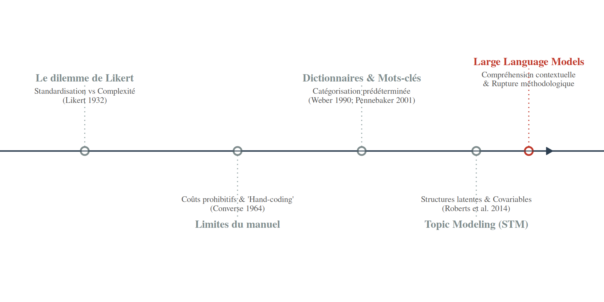
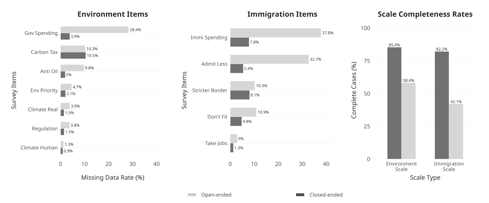
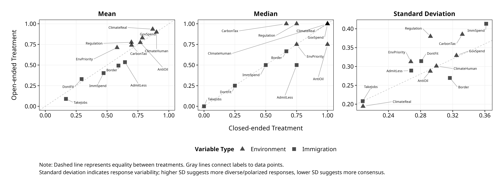
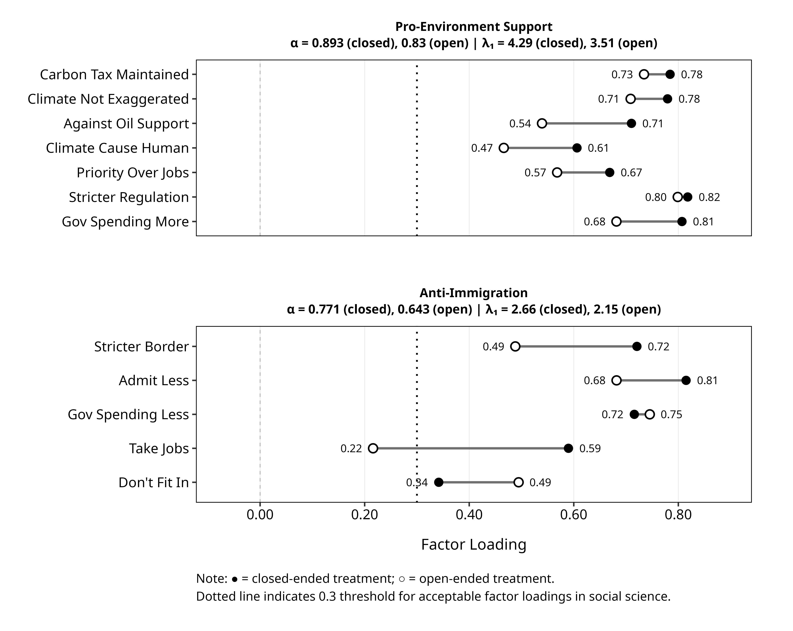
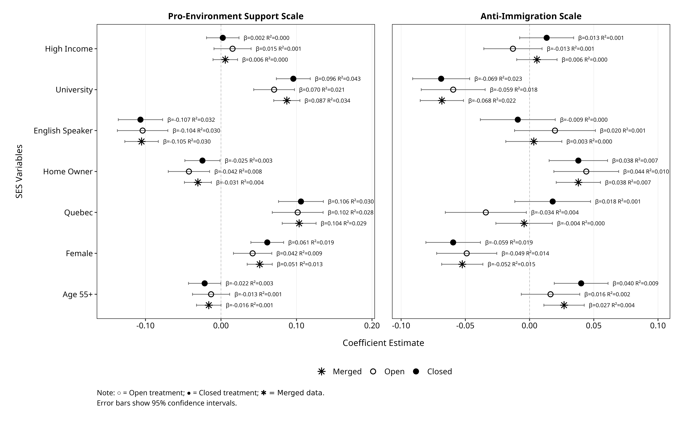
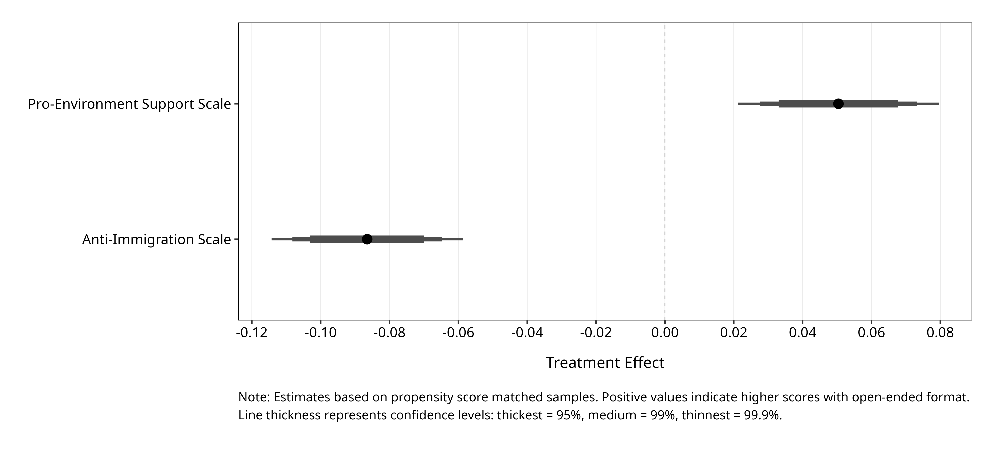
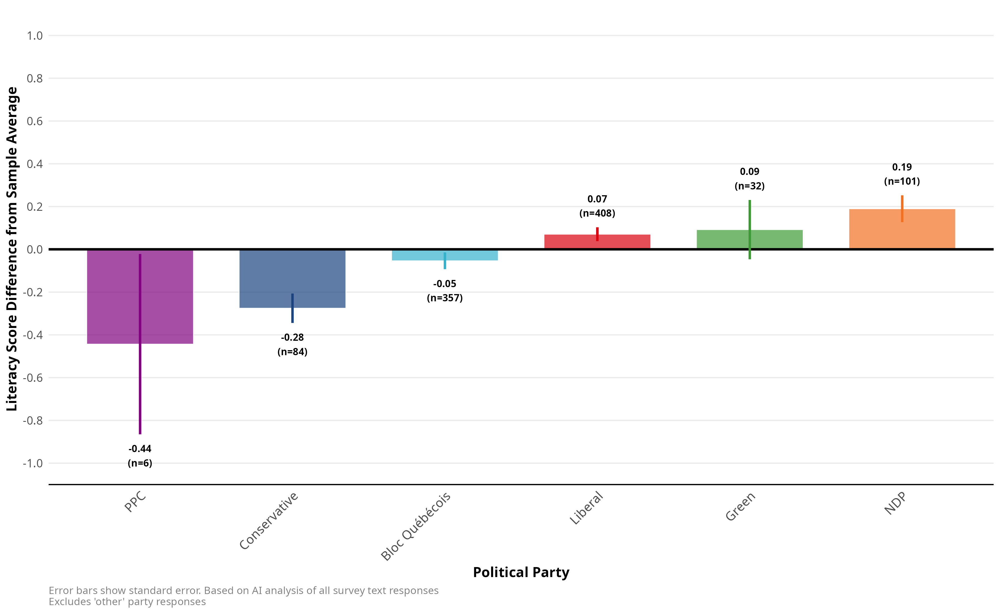
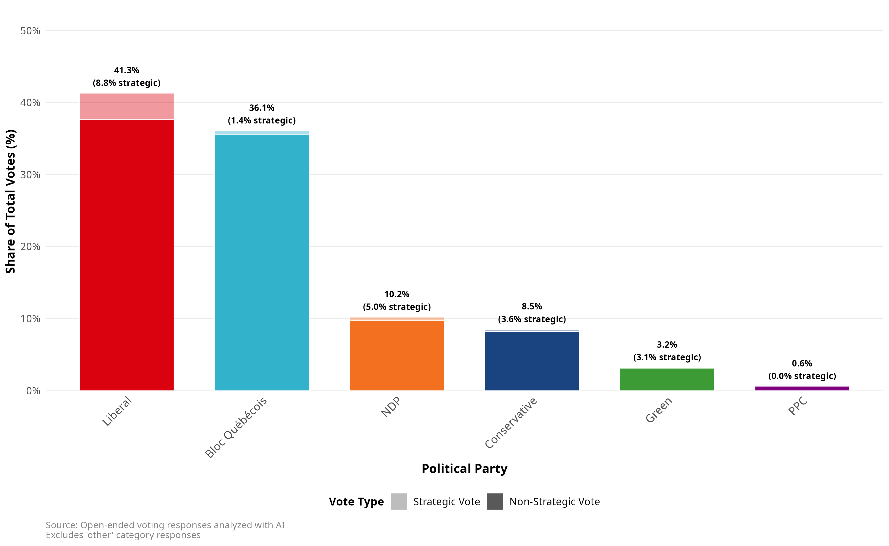
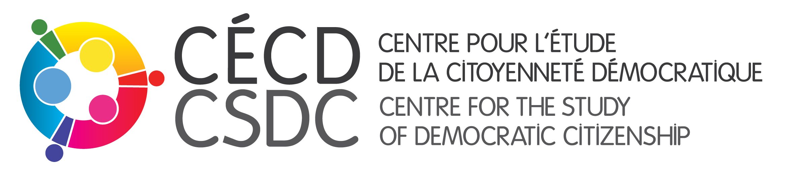

FROM CHECKBOX TO TEXTBOX
Les LLMs peuvent-ils traiter les réponses ouvertes pour mesurer les mêmes facteurs latents que les questions fermées?
École de méthodologie CÉCD| 2025
Le débat sur la mesure des attitudes oppose traditionnellement deux impératifs (Lazarsfeld, 1944; Schuman & Presser, 1996) :
Malgré les avantages théoriques de l’approche ouverte pour la validité de construit, son utilisation reste marginale :
“Collection and especially analysis of open-ended data are relatively rare […] and almost exclusively done through human coding.” — Roberts et al. (2014)
L’avantage empirique des questions ouvertes n’est pas absolu. Elles présentent des biais spécifiques :
À l’inverse, la question fermée peut “aider” le répondant :
Exemple : “Most Important Problem” (Schuman & Presser, 1996) Des enjeux comme la criminalité émergent souvent dans les questions fermées (activation d’une inquiétude latente) alors qu’ils sont omis spontanément (défaut d’accessibilité).
La question fermée définit la tâche pour le répondant, créant une tension :
1. Clarification (L’apport)
2. Imposition (Le risque)
Conclusion : On préfère souvent le fermé par faisabilité analytique, malgré le risque d’imposition.
Pourquoi les questions ouvertes sont-elles si coûteuses ? Prenons un exemple trivial tiré d’une question de sondage récente (\(N=2000\)) sur le groupe de musique préféré.
La réponse la plus populaire (\(n=75\)) apparaît sous 10 variations distinctes :
“the beatles”, “The Beatles”, “The beatles”, “The Bwatles”, “beatles”, “Beatles”, “beetles”, “Beetles”, “les beattels”, “Les Beatles”.
Le constat méthodologique : Même pour une entité simple, la variabilité textuelle rend les données brutes inutilisables sans nettoyage intensif.
Les approches classiques (mots-clés, Regex, LDA, STM) échouent à capturer ces variations (“The Bwatles”) sans un effort de programmation disproportionné, forçant souvent un retour au codage manuel.
Face à cette “absurdité statistique” de la classification infinie, Rensis Likert proposait un compromis nécessaire pour les outils de 1932 :
“[Researchers could] classify and subclassify them indefinitely […] This result is statistically as well as psychologically absurd.” — Likert (1932)
L’échelle de Likert a résolu ce problème par la standardisation, sacrifiant la complexité pour la faisabilité.
La question de recherche : Les LLMs nous permettent-ils de rouvrir ce débat méthodologique que Likert avait clos ?
Notre objectif n’est pas de remplacer la question fermée, mais d’investiguer si nous pouvons désormais changer les termes de l’échange entre standardisation et complexité.

Figure 1: Évolution des approches : De la contrainte des ressources à la capacité computationnelle.
Les méthodes traditionnelles présentent des limitations pour les réponses de sondage: textes courts, langage informel, ambiguïté contextuelle (Roberts et al., 2014).
Les LLMs peuvent-ils mesurer les mêmes facteurs latents que les questions fermées traditionnelles?
Cette question porte sur l’équivalence de mesure: les deux formats capturent-ils les mêmes construits avec des propriétés psychométriques suffisantes pour l’analyse comparative?
2,817
répondants canadiens
| Groupe | N assignés | Complétion |
|---|---|---|
| Fermées | 1,687 | 93.7% |
| Ouvertes | 1,685 | 73.4% |
21 variables mesurées: 7 attitudes environnementales, 5 attitudes immigration, 7 SES, 1 vote. Questions issues du CES (Stephenson et al., 2022) et items complémentaires.
Approche en deux étapes:
Procédure de fiabilité:
Coût computationnel: ~223,000 prompts traités en <1h pour <3$

Interprétation: La non-réponse se concentre sur les items demandant des estimations quantitatives. Les items attitudinaux simples montrent des différences plus modestes. Aucun effet de fatigue détecté.

Environnement: Ouvertes > Fermées
Immigration: Ouvertes < Fermées
Interprétations possibles:

Fiabilité (α de Cronbach):
| Échelle | Fermées | Ouvertes |
|---|---|---|
| Env. | 0.845 | 0.678 |
| Immi. | 0.816 | 0.573 |
Les deux formats produisent des structures factorielles comparables, avec une réduction systématique de la fiabilité pour le format ouvert.
Note : L’item sur les immigrants qui « prennent les emplois » a un poids factoriel très faible (0.216) dans le format ouvert, suggérant que cet enjeu est plus complexe et résiste à la simplification sur une seule échelle d’attitude anti-immigration.

L’analyse de régression montre une validité externe très similaire entre les deux formats.

Le matching par score de propension confirme les effets causals du format de question:
Ce que les LLMs permettent:
Considérations:
Choix méthodologique plutôt que contrainte pratique
Les LLMs réduisent les barrières qui limitaient historiquement l’usage des questions ouvertes.
Complémentarité des formats
Chaque format capture des aspects potentiellement distincts des attitudes.
Considérations spécifiques au domaine
Les effets de format varient selon le contenu substantif des attitudes mesurées.
Nous observons une fiabilité (α) plus faible et une variance plus élevée dans les réponses ouvertes. Deux interprétations s’opposent :
Le défi actuel : Distinguer mathématiquement si la variance ajoutée est de l’information (signal) ou de l’instabilité algorithmique (bruit).
Si les LLMs ne font que reproduire les échelles Likert (en moins fiable), l’innovation est mineure. La véritable valeur ajoutée doit se trouver ailleurs :
Direction future : Ne pas se limiter à l’équivalence psychométrique, mais exploiter le texte pour prédire des comportements (vote) mieux que les questions fermées ne le peuvent.

Les réponses ouvertes permettent d’inférer des caractéristiques latentes comme la littératie textuelle des répondants, qui varie selon l’affiliation partisane.
L’utilisation de modèles propriétaires (Gemini, GPT) pose des défis de validité à long terme :
Nécessité : Valider ces résultats sur des modèles Open Source (Llama, Mistral) pour garantir une science pérenne.

Le format ouvert permet de détecter le vote stratégique, une information difficile à capturer avec des questions fermées standard.
Les résultats suggèrent que les LLMs peuvent traiter les réponses ouvertes pour mesurer les mêmes facteurs latents que les questions fermées, avec des propriétés psychométriques acceptables mais systématiquement réduites.
Cette équivalence structurelle s’accompagne d’effets de format sur les distributions qui méritent considération dans l’interprétation.
Le choix entre formats devient ainsi une décision méthodologique fondée sur les objectifs de recherche, plutôt qu’une contrainte pratique imposée par les ressources disponibles.
Merci
Questions et discussion
